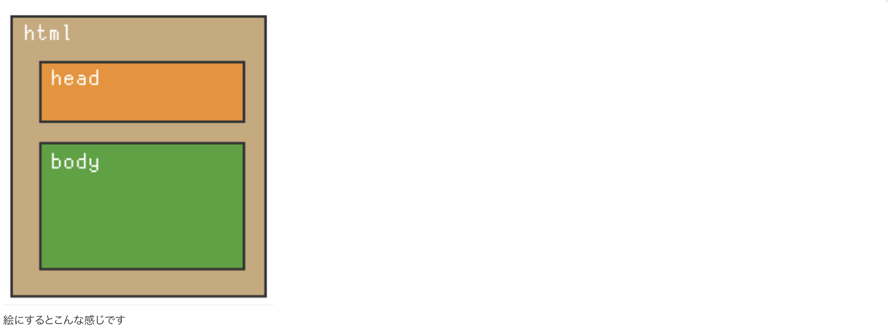
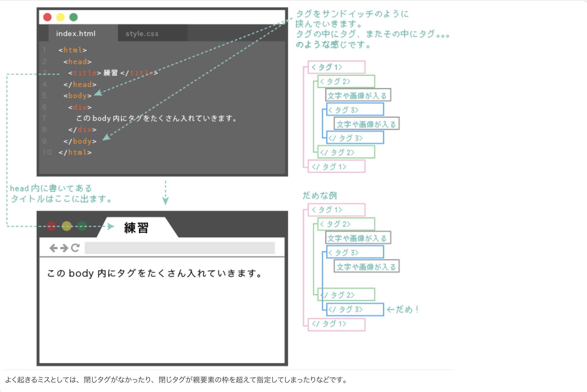
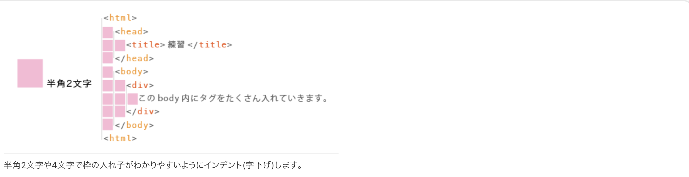
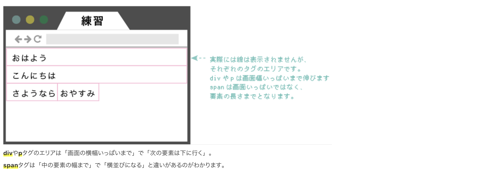
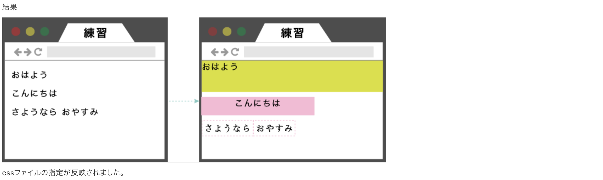
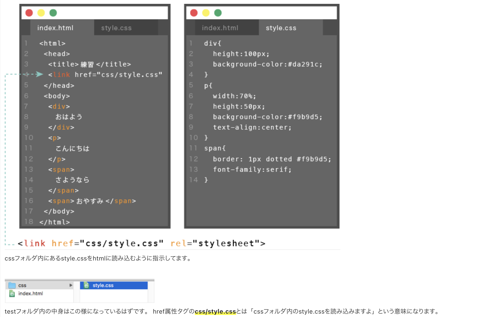
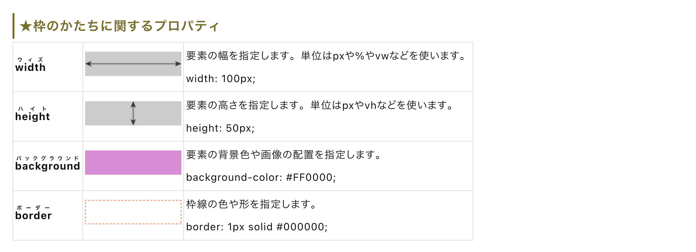
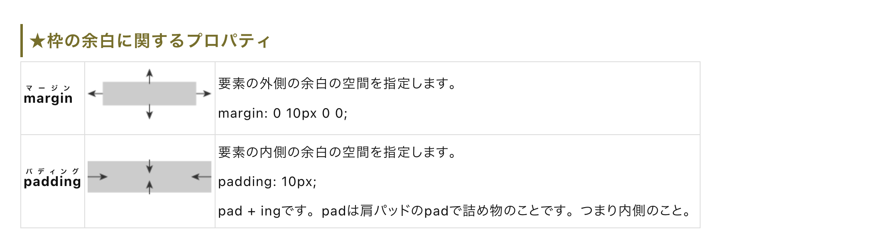
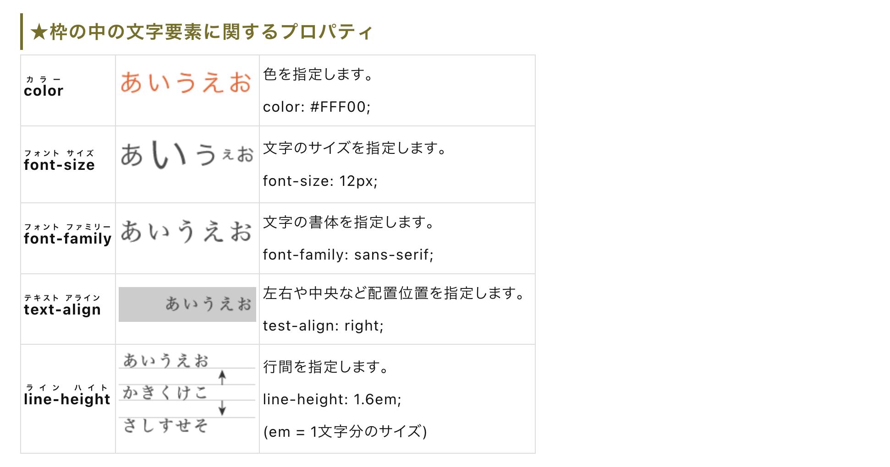
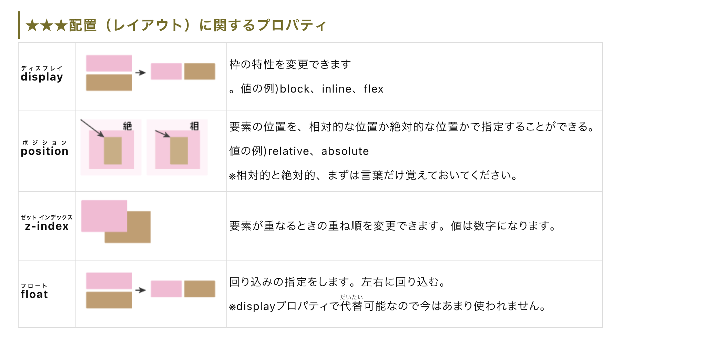

目次
1. Webサイトを作る準備
プログラムとは何か
「プログラム」という言葉は、コンピューターだけのものではありません。運動会や音楽会の進行表のように、「何を、どの順番で行うか」を決めたものもプログラムです。
コンピューターでのプログラミングも、基本的な考え方は同じです。たとえば「写真を表示する」「ボタンを押したら反応する」「削除されたら表示を変える」といった処理を、コンピューターにわかる形で順番に書いていきます。
プログラミングは、コンピューターに対して「何を、どの順番でしてほしいか」を文章のように書く作業です。
Webサイト制作で使うもの
入門レベルのWebサイト制作で必要なものは、大きく分けて2つです。
| 必要なもの | 役割 | 例 |
|---|---|---|
| ブラウザ | 作ったWebページを表示するためのアプリケーション | Chrome、Safari、Firefox |
| テキストエディタ | HTMLやCSSなどのコードを書くためのアプリケーション | Visual Studio Code |
プログラミング言語とマークアップ言語
初めてのWebサイト制作では、いきなり本格的なプログラミング言語を使うわけではありません。まずはHTMLというマークアップ言語を使います。
マークアップ言語は、文章や画像に「これは見出し」「これは段落」「これは画像」といった意味を付けるための言語です。計算や条件分岐を中心に扱うプログラミング言語とは役割が違います。
マークアップ言語
文章や画像などに役割を与え、Webページの構造を作ります。
例：HTML
プログラミング言語
計算、条件分岐、データ処理など、動きのある処理を作ります。
例：JavaScript、PHP、Python
コーディングとは
テキストエディタにHTMLやCSSなどを書く作業は、一般的に「コーディング」と呼ばれます。コードライティングと呼ばれることもあります。
実務では広い意味で「プログラミング」とまとめて呼ばれることもありますが、まずは「コードを書く作業」と理解しておけば問題ありません。
2. ブラウザとテキストエディタ
ブラウザについて
ブラウザは、Webページを見るためのアプリケーションです。Chrome、Firefox、Safariなどがあります。
研修では、表示確認の基準を揃えるためにChromeを使う想定にします。
テキストエディタについて
テキストエディタは、HTMLやCSSを書くためのアプリケーションです。現在はVisual Studio Codeが広く使われています。
Visual Studio Codeは、単なるメモ帳ではなく、コードを見やすくしたり、入力を補助したり、拡張機能を追加したりできます。
「Visual Studio」と「Visual Studio Code」は別物です。研修では青いアイコンの「Visual Studio Code」を使います。
3. Visual Studio Codeの準備
推奨する拡張機能
Visual Studio Codeでは、拡張機能を追加することで、HTML/CSSの学習やコーディングをしやすくできます。
| 拡張機能 | 役割 |
|---|---|
| Japanese Language Pack for VS Code | Visual Studio Codeのメニュー表示を日本語化します。 |
| Auto Close Tag | 開始タグを書いたとき、終了タグの入力を補助します。 |
| Auto Rename Tag | 開始タグを変更したとき、対応する終了タグも変更しやすくします。 |
| Bracket Pair Colorizer | 括弧の対応関係を色で見やすくします。 |
| Color info | CSSの色指定を確認しやすくします。 |
| Highlight Matching Tag | 開始タグと終了タグの対応を確認しやすくします。 |
拡張機能の入れ方
- Visual Studio Codeを開く
- 左側の「拡張機能」アイコンを押す
- 検索欄に拡張機能名を入力する
- 対象の拡張機能を選び、インストールする
Hover表示の設定
学習中にポップアップ説明が邪魔になる場合は、設定からHover表示を無効化できます。
- 左下の歯車アイコンを押す
- 「設定」を開く
- 検索欄に
editor.hoverと入力する Editor > Hover: Enabledのチェックを外す
4. 最初のHTMLファイルを作る
テキストを入力する
まずは難しい構造を使わず、テキストだけを入力してブラウザで表示してみます。
あいうえおファイル名と拡張子
Webページとして扱うファイルには、.html という拡張子を付けます。たとえば、最初のファイル名は index.html とします。
| 例 | 意味 |
|---|---|
index.html |
HTMLファイル。ブラウザでWebページとして表示できます。 |
sample.txt |
テキストファイル。通常のメモとして扱われます。 |
photo.jpg |
画像ファイル。 |
拡張子は、ファイルの種類をコンピューターに伝えるための目印です。
ブラウザで確認する
- Visual Studio Codeで新規ファイルを作る
あいうえおと入力するindex.htmlという名前でデスクトップなどに保存する- 保存したファイルをChromeにドラッグ＆ドロップする
- ブラウザに文字が表示されることを確認する
自分のパソコン内で作っている段階では、HTMLファイルをブラウザに直接読み込ませて表示確認できます。この状態をローカル環境での確認と呼びます。
5. HTMLとCSSの役割
HTMLは構造、CSSは装飾
Webページは、主にHTMLとCSSを組み合わせて作ります。
| ファイル | 担当する内容 | 例 |
|---|---|---|
| HTML | 見出し、文章、画像、表など、ページの構造を作る | 文章を段落にする、画像を置く、表を作る |
| CSS | 色、幅、高さ、余白、文字サイズなど、見た目を整える | 背景色を変える、文字を中央寄せする、枠線を付ける |
HTMLで作った要素に対して、CSSで「どのように見せるか」を指定します。
HTMLの例
<p>こんにちは</p>文章のまとまりを作っています。
CSSの例
p {
color: #ffff00;
background-color: #0000ff;
}段落の文字色や背景色を指定しています。
CSSファイル
CSSは、style.css のようなファイル名で保存することが多いです。HTML側からCSSファイルを読み込むことで、デザイン指定が反映されます。
CSSは「Cascading Style Sheets」の略です。HTMLに対してスタイルを指定するための言語です。
6. HTMLとCSSの決まりごと
HTMLのタグ
HTMLでは、<p> や <div> のようなタグを使って、文字や画像に役割を与えます。
<p>こんにちは</p>
多くのタグは、開始タグと終了タグで内容を囲みます。ただし、画像を表示する <img> や改行を表す <br> のように、終了タグを持たないタグもあります。
改行の扱い
HTMLファイル上で改行しても、ブラウザ上ではそのまま改行されないことがあります。
コード上の改行だけの場合
あいうえお
かきくけここのように書いても、ブラウザでは1行にまとまって表示される場合があります。
<br> を使う場合
あいうえお<br>
かきくけこ
<br> は、ブラウザに対して「ここで改行する」と伝えるタグです。
CSSの基本文法
CSSでは、どのHTML要素に、どのような見た目を指定するかを書きます。
p {
color: #333333;
font-size: 16px;
}| 名称 | 説明 | 上の例 |
|---|---|---|
| セレクタ | どの要素に指定するかを表す | p |
| プロパティ | 何を変更するかを表す | color、font-size |
| 値 | どのように変更するかを表す | #333333、16px |
プロパティと値の間は
: で区切り、指定の最後には ; を付けます。
7. HTMLは枠の組み合わせ
枠でページを作る
HTMLでは、文章や画像などを「枠」に入れていく感覚でページを作ります。枠を縦に積んだり、横に並べたり、別の枠の中に入れたりして、画面全体の構造を作ります。

必ず使う基本構造
HTMLファイルには、基本的に以下のような大きな枠があります。
<html>
<head>
<title>練習</title>
</head>
<body>
画面に表示する内容
</body>
</html>| タグ | 役割 |
|---|---|
<html> 〜 </html> |
HTML文書全体を囲む一番外側の枠です。 |
<head> 〜 </head> |
画面には直接表示されない設定情報を入れる場所です。タイトルやCSS読み込みなどを書きます。 |
<body> 〜 </body> |
ブラウザ上に表示される内容を入れる場所です。 |

8. 基本のタグ
HTMLには多くのタグがありますが、最初からすべてを覚える必要はありません。まずは頻繁に使うタグから理解します。
| タグ | 読み方・意味 | 用途 |
|---|---|---|
<div> 〜 </div> |
division | 特別な意味を持たない汎用的な枠として使います。 |
<p> 〜 </p> |
paragraph | 文章の段落を表します。 |
<span> 〜 </span> |
span | 文章の一部分を囲むときによく使います。 |
<h1> 〜 </h1> 〜 <h6> 〜 </h6> |
heading | 見出しを表します。h1 が最も大きな見出しで、h6 に向かって階層が下がります。 |
<table> 〜 </table> |
table | 表を作るときに使います。 |
<img> |
image | 画像を表示するときに使います。終了タグはありません。 |
<br> |
break | 改行を入れるときに使います。終了タグはありません。 |
タグは「画面上の部品に役割を与える名前」です。最初はよく使う20〜30個程度を使いながら覚えれば十分です。
9. タグの使い方と表示の違い
基本構造を書いてみる
index.html を以下のように書き換え、ブラウザで表示を確認します。
<html>
<head>
<title>練習</title>
</head>
<body>
<div>
あいうえお
</div>
</body>
</html>

複数のタグを使ってみる
次に、div、p、span を同時に使って表示の違いを確認します。
<html>
<head>
<title>練習</title>
</head>
<body>
<div>
おはよう
</div>
<p>
こんにちは
</p>
<span>
さようなら
</span>
<span>おやすみ</span>
</body>
</html>| タグ | 表示の特徴 |
|---|---|
div |
基本的に横幅いっぱいの領域を持ち、次の要素は下に配置されます。 |
p |
段落として扱われ、基本的に下に積まれます。 |
span |
中身に必要な分だけの幅を持ち、横に並びやすい要素です。 |

この段階では、「タグの種類によって、使う幅や並び方が変わる」と理解できれば十分です。
10. CSSでデザインしてみる
フォルダ構成
HTMLとCSSを分けて管理するために、以下のような構成にします。
test/
├── index.html
└── css/
└── style.cssHTMLからCSSを読み込む
index.html の <head> 内に、CSSを読み込むための <link> タグを書きます。
<link href="css/style.css" rel="stylesheet">| 部分 | 意味 |
|---|---|
link |
外部ファイルをHTMLに関連付けるためのタグです。 |
href |
読み込むファイルの場所を指定します。ここでは css/style.css を指定しています。 |
rel |
HTMLと読み込むファイルの関係を指定します。CSSの場合は stylesheet と書きます。 |
index.html
<html>
<head>
<title>練習</title>
<link href="css/style.css" rel="stylesheet">
</head>
<body>
<div>
おはよう
</div>
<p>
こんにちは
</p>
<span>
さようなら
</span>
<span>おやすみ</span>
</body>
</html>css/style.css
div {
height: 100px;
background-color: #d9e021;
}
p {
width: 70%;
height: 50px;
background-color: #f9b9d5;
text-align: center;
}
span {
border: 1px dotted #f9b9d5;
font-family: serif;
}

単位について
CSSの値には、用途に応じて単位を付けます。
| 単位 | 意味 |
|---|---|
px |
ピクセル。画面上の大きさを指定するときによく使います。 |
% |
親要素などを基準にした割合で指定します。 |
rem |
基準となる文字サイズに対する倍率で指定します。 |
vw |
画面幅を基準にした単位です。 |
vh |
画面高さを基準にした単位です。 |
カラーコード
CSSでは、色を #FF0000 のような6桁のカラーコードで指定できます。# の後に数字やアルファベットを組み合わせて色を表します。
#FF0000 赤
#000000 黒
#00FF00 緑
#CCCCDD 薄い青紫
#9932CC 紫11. CSSプロパティ一覧
ここでは、枠や文字を装飾するときによく使うCSSプロパティを確認します。最初からすべて暗記する必要はありません。「こういう指定ができる」と知っておけば十分です。




CSSプロパティは数が多いので、暗記よりも「調べて使える」状態を目指してください。研修初期では、幅・高さ・背景色・余白・文字色・文字サイズ・中央寄せを使えれば十分です。